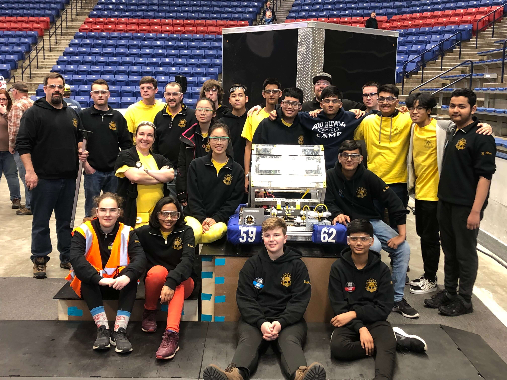

About Us
We're Team 5962, also known as perSEVERE, a FIRST Robotics Competition (FRC) team from Lowell, Massachusetts. We welcome students ages 14+ from any school, as well as mentors from any town or company.
Every year, we analyze the game that FIRST releases and design, build, wire, and test a robot to compete with teams from across New England and around the world. We're also highly involved in our community through fundraising and outreach events!
Learn More
